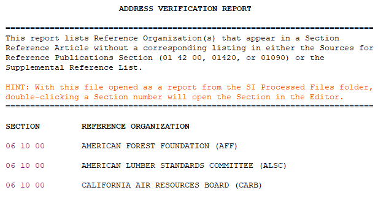

The Address Verification Report (ADDVER.RPT) identifies Reference Organizations used in Reference Articles without a corresponding listing in the 01 42 00 Sources for Reference Publication Section or the Supplemental Reference List.
 The generation of this report is contingent upon the inclusion of the Job's 01 42 00 Sources for Reference Publications Section.
The generation of this report is contingent upon the inclusion of the Job's 01 42 00 Sources for Reference Publications Section.
Address Verification Report

System Validation Protocols
- Verifies that all referenced Sponsoring Organizations are cited in the processed Sections' text and are listed in the Job's 01 42 00 Sources for Reference Publications Section or the Supplemental Reference List (SRL).
- Generates a list of Sponsoring Organizations used in any Section's Reference Article but not found in the Job's 01 42 00 Sources for Reference Publications Section or the Supplemental Reference List (SRL).
Resolving Discrepancies
To open the Section in the SI Editor, double-click the corresponding Section Number. Upon opening the Section, the cursor will automatically be positioned at the precise location of the identified issue.
If the Job's 01 42 00 Sources for Reference Publications Section already lists the Reference's Sponsoring Organization:
- Use the Reference Wizard to add the Sponsoring Organization name and acronym (ORG), Reference Identifier (RID), and Reference Title (RTL), including all corresponding tags, to the Section's Reference Article.
 Activate the Reference Wizard by clicking the REF, RID, or RTL buttons on the SI Editor's Tagsbar. The Check Reference command is automatically triggered when adding a REF or RID within the Reference Article, or inserting a RID elsewhere in the Section body, outside the Reference Article.
Activate the Reference Wizard by clicking the REF, RID, or RTL buttons on the SI Editor's Tagsbar. The Check Reference command is automatically triggered when adding a REF or RID within the Reference Article, or inserting a RID elsewhere in the Section body, outside the Reference Article.
- Verify that the content added to the Section's Reference Article mirrors the 01 42 00 Sources for Reference Publications Section or the Supplemental Reference List, with identical text, spaces, and capitalization.
If the Job's 01 42 00 Sources for Reference Publications Section doesn't list the Reference's Sponsoring Organization:
- Open the Job's 01 42 00 Sources for Reference Publication Section and add the missing Reference Organization alphabetically.
 To streamline adding a new Reference Organization, copy an existing entry with its tags, then modify the Sponsoring Organization's name, acronym, and contact information.
To streamline adding a new Reference Organization, copy an existing entry with its tags, then modify the Sponsoring Organization's name, acronym, and contact information.
Additional Learning Tools
To learn more about Reports, their functions, and how to correct problems, refer to Chapter 6 in the QuickStart Guide found on the SpecsIntact Website's Support & Help Center page.
 Watch the Address Verification Report eLearning module within Chapter 6 - Correcting QA Report Errors and Discrepancies.
Watch the Address Verification Report eLearning module within Chapter 6 - Correcting QA Report Errors and Discrepancies.